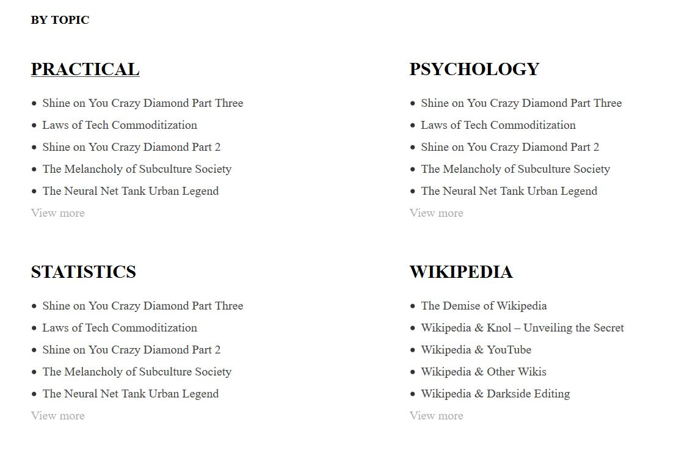

Shortcode to Display Recent Posts for Each Category in WordPress
Sometimes, you may need to add a section in your page that displays recent blog posts. WordPress homepage by default shows recent blog posts and nothing else. However, in most of the cases, the user would like to customize the homepage content to display other sections as well. In such cases, you can use the Gutenberg editor, the new core WordPress editor, since it has a lot of code blocks that are very handy and easy to use. There is also the recent posts block that lets you display the most recent blog posts. However, in some cases, you might want to make some customizations. You might want to display a section on the homepage (or any other page) that displays the most recent blog posts from a specific category (or even display multiple sections of latest blog posts sorted by category). In this tutorial, I will share with you what I did - looping through all categories and displaying the 5 most recent blog posts for each different category:

This can be very useful for websites with lots of content that needs to be ordered by category and it can be a nice addition to the home page (or any other page you want). Normally, you can only add Gutenberg blocks or custom html inside your WordPress posts. However, with the help of shortcodes, you can add some programming logic and create custom content whereever you want. In this post, I will guide you through the process how to create a custom shortcode to display recent posts for each different category in WordPress. By the end of this tutorial, you will be able to display the latest posts as a seperate section on your homepage or whereever you want, in a beautful, two column layout.
To take full advantage of this tutorial, you need to have some very basic knowledge of php and you need to have a child theme installed or a plugin that lets you add php snippets.
Create a Custom Shortcode
First, you need to create a shortcode. It is actually easier than you might think. Just paste the following code in your child theme’s functions.php:
add_shortcode('yonkov_recent_posts_by_category', 'yonkov_recent_posts_by_category');
This piece of code will create a custom shortcode for you called yonkov_recent_posts_by_category.
Display Recent Posts With thumbnails
Now, we need to create a function that will do the magic for us:
<?php
/* Recent posts by category shortcode */
function yonkov_recent_posts_by_category () {
global $post;
// Instantate on object. We need this for the shortcode to work
ob_start();
$categories = get_categories(); ?>
<div class="recent-posts-per-category"> <?php
foreach($categories as $category){ //loop through all categories
//initiate i counter
$i=1;
// the query
$the_query = new WP_Query( array( 'category_name' => $category->name, 'posts_per_page' => 6 ) );
// The Loop
if ( $the_query->have_posts() ) {
// Get the ID of a given category
$category_id = get_cat_ID( $category->name );
// Get the URL of this category
$category_link = get_category_link( $category_id ); ?>
<div class="column">
<a href="<?php echo esc_url( $category_link ); ?>">
<h4 class="title"><?php echo esc_attr($category->name);?> </h4>
</a>
<ul class ="display-posts-listing grid">
<?php while ( $the_query->have_posts() ) :
$the_query->the_post();
// Display the last 5 posts
if($i<6) : ?>
<li class="listing-item">
<a class="title" href="<?php the_permalink(); ?>"> <?php the_title(); ?> </a>
</li>
<?php else: // Display a read more button if there are more than 5 posts ?>
<a class="view-more" href="<?php echo esc_url( $category_link ); ?>">View more</a>
<?php endif;
$i++; ?>
<?php endwhile; ?>
</ul>
</div> <?php
}
/* Restore original Post Data */
wp_reset_postdata();
} ?>
</div> <?php
return ob_get_clean();
}
[yonkov_recent_posts_by_category]
In your WordPress dashboard, go to pages and choose a page to edit. Paste the shortcode somewhere inside your page content. Save the page and when you visit it again, you should be able to display the recent posts for each different cateogory inside the page.
Style the recent posts shortcode with css
We have managed to display the recent posts but it does not look pretty, right? Let’s style it with some css! Add the following code to your main style.css file or open your theme’s customizer and paste the code in the additional css tab:
/* Two column layout */
@media (min-width: 40em){
.recent-posts, .recent-posts-per-category {
display: table;
width: 100%;
}
.column {
width: 50%;
float: left;
}
.recent-posts-per-category:after {
content: '';
clear: both;
}
}
Great! Now we have a seperate section for the latest posts from each different category in WordPress and they are displayed in a beautiful 2-column layout on desktop!
We have finally created a section that displays recent posts for each category that looks surprizingly good and it is fully responsive on mobile!
Read more: